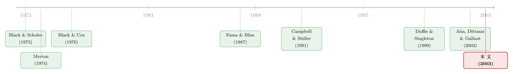

把利率曲线的「定价」和「预测」装进同一个模型，为什么这么难？
本文读的是 Dai & Singleton (2003, Review of Financial Studies)：一篇关于动态利率期限结构模型的批判性综述。作者把任意一个 DTSM 拆成「三块积木」——风险中性下的状态分布、短率与状态变量的映射、以及因子风险溢价——然后追问一个尖锐的问题：当我们逼着同一个模型既要在横截面上给债券和衍生品定准价，又要在时间序列上复现收益率曲线的历史动态时，理论的「可解性」和现实的「拟合度」会在哪里打架，又靠哪根杠杆和解。
1 引言：一个模型，两份差事
先抛一个看似平常、其实要命的问题。
你手上有一个利率模型。它要干两件事。第一件事是定价：给定今天的状态，算出各个期限的零息债价格、算出 cap、swaption 的价格——这是华尔街交易台「即时定价」(point-in-time) 的刚需。第二件事是描述现实：收益率曲线在过去几十年里怎么变陡、变平、变驼峰，波动率如何聚集又消散，长债收益能不能被曲线斜率预测——这是计量经济学家估参数、做检验时盯着的东西。
麻烦在于，这两件差事，分别活在两个不同的概率测度下。定价活在风险中性测度 (risk-neutral measure, Q) 里，历史动态活在真实测度 (actual measure, P) 里。一个模型要同时把两边都做对，就必须把 P 和 Q 之间那道桥——风险溢价——也一并设定好。而恰恰是这道桥，长期以来被研究者出于「为了能算」的考虑，设得过于死板。
于是张力出现了：你越是追求解析可解性 (analytic tractability)，就越是把模型的函数形式锁死；而锁得越死，它能生成的收益率分布就越贫瘠，越对不上现实里那几个顽固的经验事实。这篇综述，从头到尾就是在讲这一个故事。
（顺带一提，把利率曲线拆解、并追问「风险价格」该怎么放，是这一脉文献反复纠缠的母题，可参见《把利率曲线拆成三个人：稳态、习惯、与期待》。）
2 三块积木
作者的第一个贡献，是给「什么叫一个 DTSM」立了一套干净的语言。任何一个动态期限结构模型，都由三块积木拼成：
- \(I_{M(P)}\)：状态向量 \(Y\) 在某个由计价物 \(P\) 诱导的定价测度 \(M(P)\) 下的时间序列过程；
- \(I_P\)：状态向量 \(Y\) 在真实测度 \(P\) 下的时间序列过程；
- \(I_r\)：短期利率 \(r(t)\) 对状态 \(Y\) 的函数依赖。
逻辑分工很清楚：\(I_{M(P)}\) 和 \(I_r\) 负责定价，\(I_P\) 和 \(I_r\) 负责构造债券回报在 \(P\) 下的矩、从而估参数。三块缺一不可。
这里有一句话值得划重点：「无套利」这个要求，对这三块积木的选择只施加了很弱的约束。 真正把模型逼成今天这副样子的，不是无套利，而是「要能算」——既要零息债价格有封闭解或近似封闭解，又要似然函数能最大化。是计算的便利、而非经济学的真理，塑造了我们手里的模型。这是全文的灵魂判断。
3 定价的骨架：从定价核到无套利方程
接着，一个自然的问题是：给定这三块积木，价格到底怎么算出来？
作者用定价核 (pricing kernel) \(M\) 来统一描述定价机制。设经济状态由马尔可夫状态向量 \(Y(t)\) 完整刻画：
$$dY(t) = \mu^P(Y,t)\,dt + \sigma_Y(Y,t)\,dW(t)$$
其中 \(\mu^P\) 是 \(P\) 测度下的漂移、\(\sigma_Y\) 是状态依赖的波动率矩阵。而定价核本身的演化，可以一般地写成下面这个最关键的方程——它把这篇综述的整个张力都浓缩在了一个 \(\Lambda\) 上：
这里 \(r_t = r(Y(t),t)\) 是瞬时无风险利率，\(W(t)\) 是 \(N\) 维独立布朗运动，\(\Lambda_t = \Lambda(Y(t),t)\) 是风险的市场价格 (market prices of risk) 向量。
为什么说 \(\Lambda\) 是灵魂？因为持有一份 FIS 的期望超额回报，恰好由它决定：
$$e_P(t) \equiv E_t\!\left[\frac{dP(t)+h(t)dt}{P(t)dt} - r \,\Big|\, \mathcal{F}_t\right] = \frac{1}{P(t)}\frac{\partial P(t)}{\partial Y(t)'}\,\sigma_Y(t)\,\Lambda$$
也就是说，\(\Lambda\) 是每单位风险因子波动所要求的风险溢价。Q 测度下的漂移，不过是把 P 测度的漂移减掉 \(\sigma_Y \Lambda\) 而已：\(\mu^Q_Y(t) \equiv \mu^P_Y(t) - \sigma_Y(t)\Lambda(t)\)。于是，P 和 Q 的差别，全写在 \(\Lambda\) 里。 你怎么设 \(\Lambda\)，就决定了同一套定价能配上一套怎样的历史动态。把这件事记牢，下一节的全部纠结都由它而来。
至于价格本身，把 \(M_t\) 一代入、用 Feynman–Kac，就得到熟悉的无套利偏微分方程：折现项 \(-rP\)、加上分红 \(h\)、加上由无穷小生成元 \(\mathcal{A}\) 作用出来的项，三者归零。这套机制在数学上无可挑剔——问题从来不在这里，而在于你给它喂什么样的 \(\mu^Q\)、\(\sigma_Y\) 和 \(\Lambda\)。
4 仿射模型：可解性是要付代价的
然后，真正关键的一步来了。
在所有 DTSM 里，仿射 (affine) 模型是被研究得最多的一族，原因只有一个：它能给出（本质上）封闭解。仿射模型的设定是，在 Q 测度下，状态因子的漂移和方差都是 \(Y\) 的仿射函数：
$$\mu^Q_Y(t) = \kappa^Q(\theta^Q - Y(t))$$
$$\sigma_Y(t)\sigma_Y(t)' = g_0 + \sum_{i=1}^N g_i\,Y_i(t)$$
第一式说漂移线性地均值回复到 \(\theta^Q\)；第二式说瞬时方差线性地随状态变动。再配上一个仿射的短率映射，零息债的对数价格就是状态的仿射函数——一切可解。
但是。第二式里那个「方差随状态线性变化」的设定，埋了一颗雷。在最早的「完全仿射 (completely affine)」设定里，为了保证 \(\Lambda\) 不破坏可解性，人们让风险价格也正比于同一个 \(\sqrt{g_0 + \sum g_i Y_i}\)。这意味着：驱动条件方差的那个状态，同时也驱动了风险溢价的大小——两件本该独立的事，被一根绳拴死了。
于是反转出现：正是这根绳，让完全仿射模型在面对现实时屡屡碰壁。当数据要求「波动率很高、但风险溢价的符号和波动率的变化要能各走各路」时，模型做不到。后来文献松开这根绳（让 \(\Lambda\) 有更灵活的设定），才把定价和时间序列两边同时救活——这正是「给风险价格松绑」的整条支线，详见《给「风险的价格」松一道绑：利率模型里那场按不下去的跷跷板》。
作者也讨论了仿射之外的两条出路：二次高斯 (quadratic-Gaussian, QG) 模型（短率是状态的二次型，能容纳更丰富的方差结构，Ahn, Dittmar & Gallant 2002）和非仿射的随机波动率模型。它们都在用各自的方式，赎回仿射框架为了可解性而牺牲掉的那部分丰富度。
5 理论照进现实：三个对不上的事实
讲完模型，作者把它们拖到现实面前对账。方法很朴素也很有说服力：从几族流行的 DTSM 里模拟出收益率，再看模拟数据能不能复现历史上的几个经验规律。对不上的，主要有三处。
其一，可预测性。 历史回归告诉我们，债券的持有期回报可以被收益率曲线变量（尤其是斜率）预测——这是 Fama & Bliss (1987) 和 Campbell & Shiller (1991) 留下的著名「谜题」：把长债收益变化对斜率回归，系数系统性地偏离预期假说预言的值。一个好的 DTSM，必须能在 \(P\) 测度下生成这种可预测性。而能不能生成，几乎完全取决于你怎么设 \(\Lambda\)——这再次把矛头指回了第 4 节那根绳。
其二，波动率的两副面孔。 收益率的条件波动率高度持续 (Brenner, Harjes & Kroner 1996)，而无条件波动率的期限结构呈驼峰形（中段期限波动最大）。这是两个不同维度的要求，模型要同时拍中并不容易。事实上，能把收益率曲线水平拟合得天衣无缝的模型，未必能听见波动率在说什么——关于「拟合曲线」和「拟合波动率」是两件事，可参见《收益率曲线拟合得再好，也可能对波动率「充耳不闻」》，以及把波动率藏进潜变量的尝试《既要贴合今天，又要会呼吸》。
其三，斜率与隐含波动率的「独立性」。 当作者把视线从现券移到衍生品时，又冒出两个事实：不重叠的收益率曲线段，其斜率变化之间的相关性，比收益率本身的相关性要小得多 (Rebonato & Cooper 1997)；cap 和 swaption 的隐含波动率，似乎含有独立于标的互换市场的变动 (Collin-Dufresne & Goldstein 2002a; Heidari & Wu 2003)。后者就是著名的「未跨越的随机波动率」(unspanned stochastic volatility) ——债券价格竟然「张不满」整个固定收益市场，期权里藏着现券看不到的风险。
三个事实，一条主线：低维、可解的模型，要把它们一次性全部装下，捉襟见肘。
6 跳出扩散：跳跃与机制转换
如果扩散框架不够用呢？作者顺势把模型推到扩散之外。跳跃 (jump) 让短率可以瞬时跃迁，机制转换 (regime shifts) 让模型参数在若干个「状态」之间切换（Bansal & Zhou 2002; Ang & Bekaert 2002）——「换挡」这件事本身，也成了一种被定价的风险。这一支后来发展成专门的文献，可参见《利率会换挡：当「换挡」本身也成了一种被定价的风险》。
7 当债券会违约：把短率换成 r + λ
故事的最后一块，是可违约 (defaultable) 证券。这里作者展示了同一套定价语言的延展力。
在简约式 (reduced-form) 模型里，违约由一个强度为 \(\lambda^P(t)\) 的计数过程触发，定价核要多吞下一个跳跃项：
$$\frac{dM_t}{M_t} = -r_t\,dt - \Lambda_t'\,dW_t - \gamma_t\,(dz_t - \lambda^P_t\,dt)$$
其中 \(\gamma_t\) 是违约风险的市场价格。最漂亮的结论是：可违约零息债，可以用一个违约调整折现率 \(r_t + \lambda^Q_t\) 来定价——把无风险利率换成「无风险利率 + 风险中性违约强度」，其余照旧。直觉很清楚：用 \(r+\lambda^Q\) 折现，同时算进了货币的时间价值和「发行人得活到那一天才能付钱」这件事。在 Duffie & Singleton (1999) 的「市值比例回收」假设下，折现率进一步变成 \(R_t \equiv r_t + \lambda^Q_t L^Q_t\)，\(L^Q\) 是违约时损失的市值比例。
但作者也敏锐地点出一个常被忽视的陷阱：\(\lambda^P\) 和 \(\lambda^Q\) 不只是水平不同，连持续性、时变波动、甚至「一个跳一个连续」都可以不同。 在 \(\lambda^P\) 和 \(\lambda^Q\) 之间移动，绝不等同于给 \(r\) 的漂移做标准的风险中性调整。债券价格只透露 \(\lambda^Q\) 的信息；要算真实违约强度 \(\lambda^P\)、要算超额回报，必须借助额外的 P 测度信息。这一点，对今天做信用利差分解的人仍是当头棒喝。
与之对照的是结构式 (structural) 模型：从 Black & Scholes (1973)、Merton (1974) 的「到期日资产不足以偿债即违约」，到 Black & Cox (1976) 引入「资产首次跌破边界即违约」的首次穿越 (first-passage) 思想，债券变成了「无风险债减去一份公司价值看跌期权」。关于结构式框架只盯着「还债那一天」的局限，可参见《公司随时都可能倒下，期权定价却只盯着还债那一天》；而结构式模型实证上的真正病症，其实是利差「太散」而非「太低」，见《结构模型给债券定价，错的从来不是「太低」，而是「太散」》。
8 文献脉络
把这条线拉直来看。定价的地基由 Black & Scholes (1973) 和 Merton (1974) 浇筑——用无套利和或有索取权的语言给风险债券定价；Black & Cox (1976) 把违约从「到期日一锤」推广到「首次穿越边界」，奠定了结构式一脉。
现实的拷问则来自实证：Fama & Bliss (1987)、Campbell & Shiller (1991) 用回归把「长债回报可被斜率预测」钉成了谜题，逼着任何无套利模型必须在 P 测度下交代清楚风险溢价；Brenner, Harjes & Kroner (1996) 则把「条件波动率高度持续」立为另一道硬约束。
两条线的汇流，是 Duffie & Singleton (1999) 的简约式违约定价，以及仿射/二次族的精细化（Ahn, Dittmar & Gallant 2002 的二次高斯模型）。Dai & Singleton (2003) 这篇综述，正站在这个汇流处，回头把整片地形画成一张图：用「三块积木 + 风险价格 \(\Lambda\)」这套坐标，丈量每一族模型在「可解性—丰富度」之间到底站在哪里。

9 评论与延伸（Q&A + 研究方向）
(a) 几个可能的疑问
Q：这只是一篇综述，它的「贡献」到底是什么？
贡献不在新模型，而在新的「坐标系」。它把五花八门、互不嵌套的 DTSM，统一归约为三块积木（\(I_{M(P)}\)、\(I_P\)、\(I_r\)）与一个风险价格 \(\Lambda\)，从而能在同一张表上比较「谁为了可解性牺牲了什么」。综述的价值，是让后来者一眼看清取舍的边界在哪。
Q：为什么说「无套利约束很弱」这句话重要？
因为它戳破了一个常见误解：以为模型形式是被无套利「逼」出来的。作者指出，真正逼出仿射这类形式的，是封闭解和可估计性的计算便利。一旦意识到这一点，你就会去问：那些「为了能算」而做的设定，是不是正好牺牲掉了拟合现实所必需的自由度？答案往往是肯定的。
Q：完全仿射模型到底卡在哪？
卡在它把「条件方差」和「风险溢价」用同一个 \(\sqrt{g_0+\sum g_i Y_i}\) 绑死了。现实要求二者能各自变动（甚至反向），而完全仿射做不到，于是无法同时复现 Fama–Bliss / Campbell–Shiller 的可预测性。松开 \(\Lambda\) 的设定是后续的关键突破。
Q：「未跨越的随机波动率」为什么是个麻烦？
因为标准 DTSM 默认债券价格能「张满」所有风险维度——你用几个收益率就该能复制出期权。但 Collin-Dufresne & Goldstein (2002a)、Heidari & Wu (2003) 发现，cap/swaption 的隐含波动率含有现券里看不到的独立变动。这意味着低维 yield-only 模型对衍生品定价存在系统性缺口。
Q：\(\lambda^P\) 和 \(\lambda^Q\) 的区别，对实证有什么实际后果？
后果很大。债券价格只识别 \(\lambda^Q\)；若你想从利差反推「真实违约概率」或计算信用债的期望超额回报（依赖 \(\lambda^P\)），就必须额外引入 P 测度信息（如历史违约率、评级迁移）。两者持续性都可能不同，简单地「把 Q 当 P 用」会系统性地把风险溢价算错。
Q：互换利差里，\(R_t - r_t\) 都是信用风险吗？
不是。作者明确提醒：长端互换利率和 LIBOR 未必反映同一信用质量，且 \(R_t - r_t\) 里流动性风险可能与信用风险同样、甚至更重要 (Grinblatt 1994; Liu, Longstaff & Mandell 2001)。把利差一股脑当信用，会高估违约补偿。
(b) 几个可能的研究问题与提案
1. 把「未跨越波动率」搬到公司债 / CDS 市场。
【经济故事】现券若张不满风险空间，那么单只名字的 CDS 期权（swaption on CDS）或信用波动率，可能含有现券利差看不到的独立变动——即「未跨越的信用波动率」。【可行性】中。需要单名 CDS 与 CDS 期权报价（数据稀疏是主要障碍），识别上可借鉴 Collin-Dufresne & Goldstein 的跨越检验，把现券利差对期权隐含波动率做投影看残差。
2. 外资持有人结构与简约式强度的 P–Q 楔子。
【经济故事】若一国主权/公司债的边际买家结构（本土 vs 外资）变化会改变 \(\gamma_t\)（违约风险的市场价格），那么 \(\lambda^Q/\lambda^P\) 的比值应随外资份额系统性变动。【可行性】中。需要持有人微观数据 + 历史违约/评级迁移来锚定 \(\lambda^P\)，用持有人结构的外生冲击（如指数纳入）做识别，doable 但对 \(\lambda^P\) 的测量误差敏感。
3. 流动性 vs 信用：给互换/公司债利差做一次干净分解。
【经济故事】把 \(R_t - r_t\) 拆成信用、流动性两块，并检验各自的市场价格是否随市场状态时变。【可行性】高。TRACE 成交数据 + 同一发行人不同流动性证券（on/off-the-run、新老券）能提供横截面变异，识别策略成熟，是相对扎实的实证题。
4. 风险价格设定与可预测性的「桥」是否在危机中断裂。
【经济故事】既然可预测性几乎全由 \(\Lambda\) 承载，那么在流动性危机中 \(\Lambda\) 是否发生结构性跳变，使得「斜率预测回报」的回归系数失稳？【可行性】中。可用滚动窗口或机制转换框架估 \(\Lambda\) 的时变，难点在于把 \(\Lambda\) 的变化和波动率结构的变化干净地分开。
10 我的判断
这篇综述真正的分量，不在它罗列了多少模型，而在它给了后来者一把统一的尺子：三块积木 + 一个风险价格。读完你会建立一种近乎本能的警觉——每当看到一个「漂亮、可解」的利率或信用模型，先去问它在 \(\Lambda\) 上做了什么妥协，那个妥协又会让它在哪个经验事实上摔跤。这种「从可解性反推牺牲」的思维方式，是这篇文章留给我最值钱的东西。
要说担忧，综述本身没有识别问题，但它框定问题的方式留了两处隐患。其一，全文几乎把「丰富度」等同于「拟合那几个一阶/二阶矩」，而对模型的经济机制（为什么风险价格会这样动、背后是怎样的偏好或市场结构）着墨偏少——这也是后来宏观金融把利率模型与基本面挂钩的动机所在。其二，文章成于 2003 年，彼时「未跨越波动率」「流动性 vs 信用」还只是初露端倪；今天回看，这两条恰恰是低维无套利框架最深的裂缝。
后续我最想看到的，是把这套「三块积木」语言，认真地搬进公司债与信用衍生品：在那里，\(\lambda^P\) 与 \(\lambda^Q\) 的楔子、流动性与信用的纠缠、以及持有人结构对风险价格的影响，远比国债市场更剧烈、也更有故事可讲。
参考文献
- Ahn, D.-H., R. F. Dittmar, and A. R. Gallant (2002). Quadratic Term Structure Models: Theory and Evidence. Review of Financial Studies 15(1), 243–288.
- Ang, A., and G. Bekaert (2002). Regime Switches in Interest Rates. Journal of Business and Economic Statistics 20(2), 163–182.
- Bansal, R., and H. Zhou (2002). Term Structure of Interest Rates with Regime Shifts. Journal of Finance 57(5), 1997–2043.
- Black, F., and J. Cox (1976). Valuing Corporate Securities: Some Effects of Bond Indenture Provisions. Journal of Finance 31(2), 351–367.
- Black, F., and M. Scholes (1973). The Pricing of Options and Corporate Liabilities. Journal of Political Economy 81(3), 637–654.
- Brenner, R. J., R. H. Harjes, and K. F. Kroner (1996). Another Look at Models of the Short-Term Interest Rate. Journal of Financial and Quantitative Analysis 31(1), 85–107.
- Campbell, J., and R. Shiller (1991). Yield Spreads and Interest Rate Movements: A Bird's Eye View. Review of Economic Studies 58(3), 495–514.
- Collin-Dufresne, P., and R. S. Goldstein (2002a). Do Bonds Span the Fixed Income Markets? Theory and Evidence for Unspanned Stochastic Volatility. Journal of Finance 57(4), 1685–1730.
- Dai, Q., and K. Singleton (2003). Term Structure Dynamics in Theory and Reality. Review of Financial Studies 16(3), 631–678.
- Duffie, D., and K. Singleton (1999). Modeling Term Structures of Defaultable Bonds. Review of Financial Studies 12(4), 687–720.
- Merton, R. C. (1974). On the Pricing of Corporate Debt: The Risk Structure of Interest Rates. Journal of Finance 29(2), 449–470.